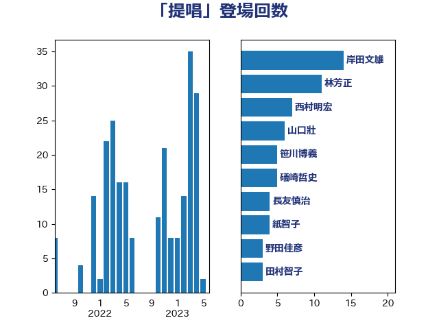

単語「提唱」

| 茂木敏充 | 自由民主党 | 27 回 |
| 平井卓也 | 自由民主党 | 7 回 |
| 山口壯 | 自由民主党 | 6 回 |
| 笹川博義 | 自由民主党 | 5 回 |
| 芳賀道也 | 国民民主党 | 5 回 |
| 伊波洋一 | 無所属 | 4 回 |
| 小林鷹之 | 自由民主党 | 4 回 |
| 尾身朝子 | 自由民主党 | 4 回 |
| 岸田文雄 | 自由民主党 | 4 回 |
| 柴田巧 | 日本維新の会 | 4 回 |
| 足立敏之 | 自由民主党 | 4 回 |
| 世耕弘成 | 自由民主党 | 3 回 |
| 川田龍平 | 立憲民主党 | 3 回 |
| 森まさこ | 自由民主党 | 3 回 |
| 武見敬三 | 自由民主党 | 3 回 |
| 玉木雄一郎 | 国民民主党 | 3 回 |
| 礒崎哲史 | 国民民主党 | 3 回 |
| 美延映夫 | 日本維新の会 | 3 回 |
| 野上浩太郎 | 自由民主党 | 3 回 |
| 高橋千鶴子 | 日本共産党 | 3 回 |
| 中司宏 | 日本維新の会 | 2 回 |
| 伊藤孝恵 | 国民民主党 | 2 回 |
| 吉田忠智 | 立憲民主党 | 2 回 |
| 吉良州司 | 無所属 | 2 回 |
| 岩渕友 | 日本共産党 | 2 回 |
| 平木大作 | 公明党 | 2 回 |
| 末松信介 | 自由民主党 | 2 回 |
| 林芳正 | 自由民主党 | 2 回 |
| 梅谷守 | 立憲民主党 | 2 回 |
| 牧山ひろえ | 立憲民主党 | 2 回 |
| 石垣のりこ | 立憲民主党 | 2 回 |
| 竹内譲 | 公明党 | 2 回 |
| 菅義偉 | 自由民主党 | 2 回 |
| 落合貴之 | 立憲民主党 | 2 回 |
| 赤嶺政賢 | 日本共産党 | 2 回 |
| 道下大樹 | 立憲民主党 | 2 回 |
| 重徳和彦 | 立憲民主党 | 2 回 |
| 野田佳彦 | 立憲民主党 | 2 回 |
| 青木愛 | 立憲民主党 | 2 回 |
| 高木かおり | 日本維新の会 | 2 回 |
| 上川陽子 | 自由民主党 | 1 回 |
| 上杉謙太郎 | 自由民主党 | 1 回 |
| 下村博文 | 自由民主党 | 1 回 |
| 中山展宏 | 自由民主党 | 1 回 |
| 中谷一馬 | 立憲民主党 | 1 回 |
| 中野洋昌 | 公明党 | 1 回 |
| 伊藤岳 | 日本共産党 | 1 回 |
| 佐藤茂樹 | 公明党 | 1 回 |
| 北神圭朗 | 無所属 | 1 回 |
| 吉田宣弘 | 公明党 | 1 回 |
| 吉田統彦 | 立憲民主党 | 1 回 |
| 国光あやの | 自由民主党 | 1 回 |
| 塩崎彰久 | 自由民主党 | 1 回 |
| 大口善徳 | 公明党 | 1 回 |
| 大家敏志 | 自由民主党 | 1 回 |
| 守島正 | 日本維新の会 | 1 回 |
| 安江伸夫 | 公明党 | 1 回 |
| 宮本徹 | 日本共産党 | 1 回 |
| 小倉將信 | 自由民主党 | 1 回 |
| 小池晃 | 日本共産党 | 1 回 |
| 小泉進次郎 | 自由民主党 | 1 回 |
| 小渕優子 | 自由民主党 | 1 回 |
| 小田原潔 | 自由民主党 | 1 回 |
| 小西洋之 | 立憲民主党 | 1 回 |
| 山井和則 | 立憲民主党 | 1 回 |
| 山本剛正 | 日本維新の会 | 1 回 |
| 山添拓 | 日本共産党 | 1 回 |
| 岡本あき子 | 立憲民主党 | 1 回 |
| 市村浩一郎 | 日本維新の会 | 1 回 |
| 後藤茂之 | 自由民主党 | 1 回 |
| 徳永エリ | 立憲民主党 | 1 回 |
| 掘井健智 | 日本維新の会 | 1 回 |
| 日下正喜 | 公明党 | 1 回 |
| 有村治子 | 自由民主党 | 1 回 |
| 松野博一 | 自由民主党 | 1 回 |
| 森本真治 | 立憲民主党 | 1 回 |
| 榛葉賀津也 | 国民民主党 | 1 回 |
| 比嘉奈津美 | 自由民主党 | 1 回 |
| 水岡俊一 | 立憲民主党 | 1 回 |
| 江藤拓 | 自由民主党 | 1 回 |
| 河野太郎 | 自由民主党 | 1 回 |
| 泉健太 | 立憲民主党 | 1 回 |
| 浅野哲 | 国民民主党 | 1 回 |
| 浜地雅一 | 公明党 | 1 回 |
| 渡辺創 | 立憲民主党 | 1 回 |
| 滝沢求 | 自由民主党 | 1 回 |
| 滝波宏文 | 自由民主党 | 1 回 |
| 漆間譲司 | 日本維新の会 | 1 回 |
| 熊野正士 | 公明党 | 1 回 |
| 片山さつき | 自由民主党 | 1 回 |
| 牧原秀樹 | 自由民主党 | 1 回 |
| 猪口邦子 | 自由民主党 | 1 回 |
| 玄葉光一郎 | 立憲民主党 | 1 回 |
| 甘利明 | 自由民主党 | 1 回 |
| 田中健 | 国民民主党 | 1 回 |
| 田島麻衣子 | 立憲民主党 | 1 回 |
| 田村憲久 | 自由民主党 | 1 回 |
| 石井啓一 | 公明党 | 1 回 |
| 石川博崇 | 公明党 | 1 回 |
| 石田昌宏 | 自由民主党 | 1 回 |
| 福島伸享 | 無所属 | 1 回 |
| 稲津久 | 公明党 | 1 回 |
| 稲田朋美 | 自由民主党 | 1 回 |
| 紙智子 | 日本共産党 | 1 回 |
| 蓮舫 | 立憲民主党 | 1 回 |
| 藤田文武 | 日本維新の会 | 1 回 |
| 西岡秀子 | 国民民主党 | 1 回 |
| 西田実仁 | 公明党 | 1 回 |
| 角田秀穂 | 公明党 | 1 回 |
| 赤池誠章 | 自由民主党 | 1 回 |
| 足立康史 | 日本維新の会 | 1 回 |
| 金城泰邦 | 公明党 | 1 回 |
| 金子恵美 | 立憲民主党 | 1 回 |
| 長友慎治 | 国民民主党 | 1 回 |
| 音喜多駿 | 日本維新の会 | 1 回 |
| 須藤元気 | 無所属 | 1 回 |
| 馬場伸幸 | 日本維新の会 | 1 回 |
| 高橋光男 | 公明党 | 1 回 |
| 鬼木誠 | 立憲民主党 | 1 回 |